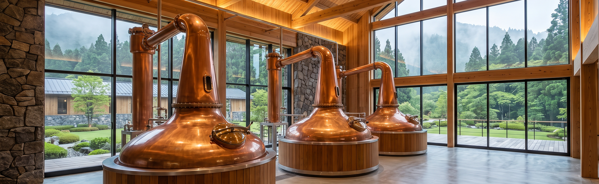
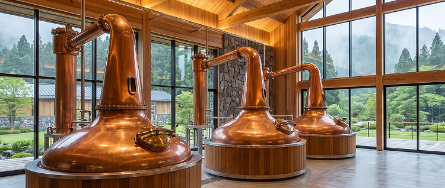
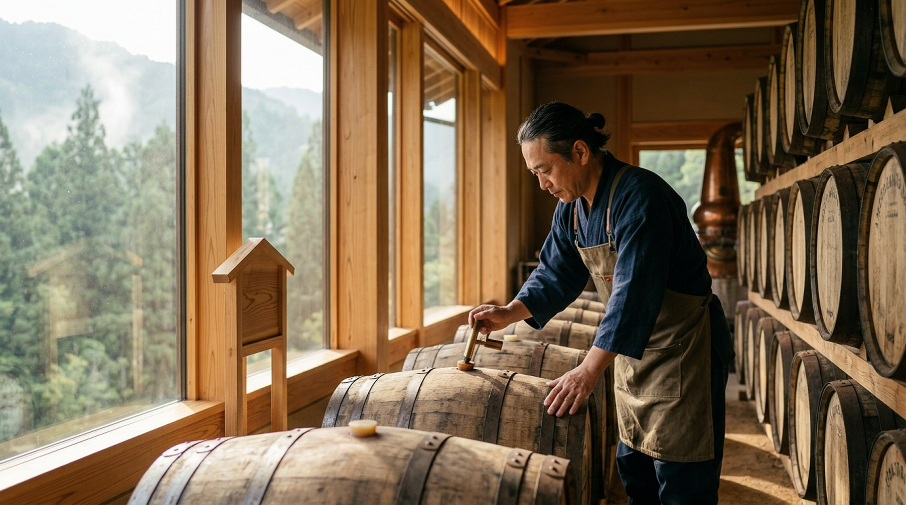
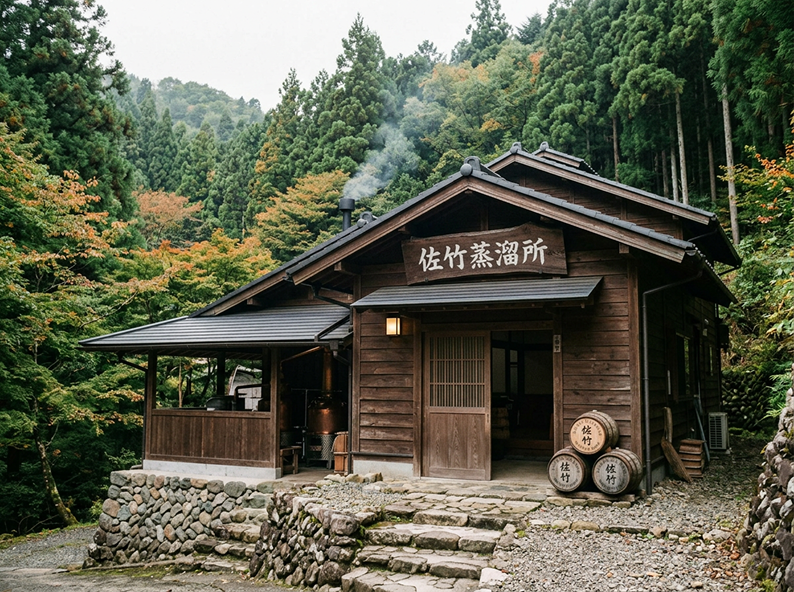
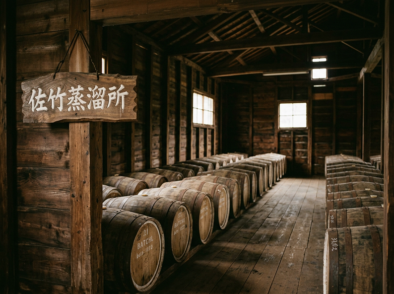
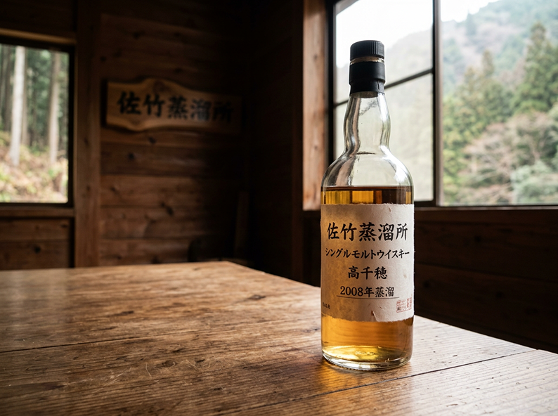
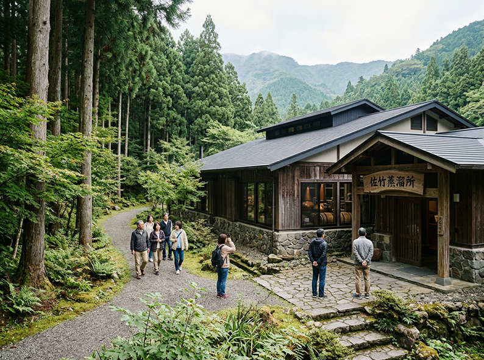
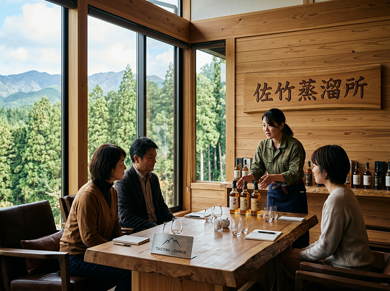
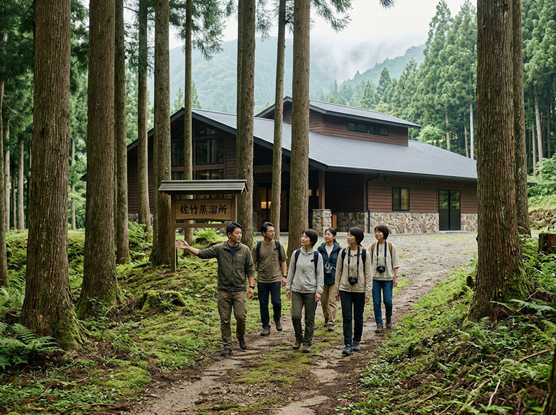
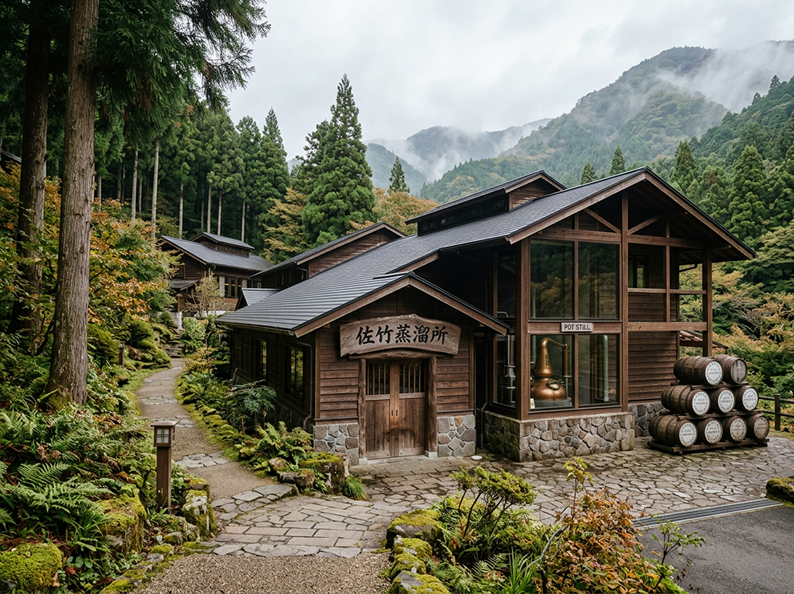

高千穂は、豊かな自然と古くから語り継がれる神話が息づく場所。
静かな森を吹き抜ける風や澄み渡る水は、この土地ならではの贈り物です。
佐竹蒸溜所では、その恵みを活かしながら、時間をかけて一本一本を丁寧に育てています。
一杯のウイスキーを味わうことは、この土地の風景や空気に触れること。
そんな特別な体験をお届けしたいと考えています。

高千穂の豊かな自然に魅せられ、この地に蒸溜所を設立。
清らかな水と豊かな森林に囲まれた環境で、土地の恵みを活かしたウイスキーづくりを始めました。

試行錯誤を重ねながら仕込みと蒸溜を繰り返し、佐竹蒸溜所として初めての原酒を樽へ。
ここから、長い時間をかけたウイスキーづくりが始まりました。

長い熟成期間を経て、佐竹蒸溜所初となるウイスキーを発売。
高千穂の自然の中で育まれた味わいを、初めて多くの人へ届けました。

ウイスキーそのものだけでなく、その背景にあるものづくりや自然も知ってほしい。
そんな想いから、蒸溜所を訪れる人に向けた見学体験を整備していきました。

ウイスキーをじっくり味わいながら、高千穂の景色や空気を楽しめるテイスティングラウンジを開設。
「飲む」だけではない、蒸溜所で過ごす時間を提案し始めました。

ウイスキーを育む高千穂の自然そのものを体験してほしい。
その想いから森林リトリートを開始。
森を歩き、景色を眺め、自然の中でゆっくりと過ごす、新しい蒸溜所体験が生まれました。

ウイスキーづくりから始まった佐竹蒸溜所は、現在では自然・ものづくり・人が交わる体験型蒸溜所へ。
これからも高千穂の自然と向き合いながら、ここでしか味わえない時間を届けていきます。